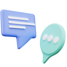

Встановлення правил і вирішення конфліктів
Управління
емоціями

Спілкування і розуміння


Встановлення правил і вирішення конфліктів
Управління
емоціями
Спілкування і розуміння
Встановлення правил і вирішення конфліктів
Управління
емоціями
Спілкування і розуміння
Цей бік трикутника стосується здатності мами керувати своїми емоціями, особливо в стресових або непередбачуваних ситуаціях. Розуміння своїх почуттів, емоцій, їхнього походження і того, як вони впливають на ваші дії, є ключовим аспектом ефективного батьківства.
Встановлення правил і вирішення конфліктів
Управління
емоціями
Спілкування і розуміння
Цей бік трикутника пов'язаний з тим, як ми розуміємо наших дітей і як ми з ними розмовляємо. Наприклад, коли ваш малюк злиться і кидає іграшки, ви дізнаєтеся, що це його спосіб сказати, що він втомився або роздратований. Це частина "розуміння дитячої поведінки".
Коли ви пояснюєте малюкові, чому потрібно поділитися іграшкою з братом чи сестрою, роблячи це так, щоб він зрозумів і відчув вашу повагу до його почуттів, - це "ефективна комунікація з дітьми".
Встановлення правил і вирішення конфліктів
Управління
емоціями
Спілкування і розуміння
Цей бік трикутника пов'язаний з тим, як мама може встановити зрозумілі та послідовні правила для дітей. Це допомагає дітям знати, що від них очікується, і надає їм впевненості. Наприклад, ви можете встановити правило: "Після вечері - час для читання". І важливо, щоб діти знали про це і дотримувалися цього правила щодня.
Але що якщо діти не дотримуються цих правил? Тут набувають чинності природні й логічні наслідки. Якщо ваша дитина вирішить дивитися телевізор замість читання після вечері, природним наслідком може бути те, що вона пропустить цікаву історію перед сном. Такі наслідки дають змогу дітям вчитися на своїх помилках, а не на страху перед покаранням.
І звісно, іноді виникають конфлікти. Можливо, вашій дитині буде важко одразу ж вимкнути телевізор і переключитися на читання. Тут важлива ваша здатність розв'язувати ці конфлікти, обговорювати та знаходити компроміс,
а не застосовувати покарання.
Ми тісно спілкуємося з нашими учасницями і пропонуємо конкретні рішення, а не 300 годин лекцій про те, що таке діти і звідки вони беруться.
Ось одна з реальних історій наших учениць. Якщо ви впізнаєте себе в описі історії нашої учасниці, то програма точно для вас.
Щодня я знову і знову ставлю собі це запитання. Адже це не просто слова, це крик моєї душі, крик мами, яка любить свою дитину понад життя.
Щодня я стикаюся з бурею емоцій і випробувань. Мої малюки - мої скарби, але їхні конфлікти, неслухняність, примхи - все це стає серйозним випробуванням для мене. Іноді мені здається, що я втрачаю контроль над ситуацією. Мої діти ігнорують мої прохання, поводяться неслухняно, влаштовують істерики та провокують мене й одне одного. Іноді мої діти відмовляються вчитися, і я просто не знаю, як із цим впоратися.
Коли всі засоби вичерпано, залишається тільки крик, агресія, покарання, ультиматуми... І після кожного вибуху я звинувачую себе, мучуся провиною, обіцяю собі більше так не робити... Але потім усе повторюється знову.
Я відчуваю важкий тягар провини і гостро відчуваю осудливі погляди оточуючих. Мені здається, що я маю встигнути все: бути ідеальною мамою, турботливою дружиною, успішною на роботі. І при цьому я ще маю справлятися з дитячими конфліктами, адже кожна дитина унікальна, і до кожної потрібен свій підхід.
Чому все так складно? Адже те, що працювало з однією дитиною, може не працювати з другою. Кожна дитина - це унікальна особистість, яка потребує унікального підходу.
Іноді мені здається, що я просто не знаю, як можна по-іншому. Я часто біжу по колу своїх уявлень і переконань, і не завжди вони виявляються правильними.
Курс розробили для мам, які хочуть знайти готові рішення на свої запитання. Це допоможе вам зрозуміти, як поводитися в конкретних ситуаціях, як впоратися з дитячими конфліктами, з непослухом і поганою поведінкою дитини. І, найголовніше, як будувати довірливі та здорові стосунки з вашими дітьми.
Оберіть пакет участі та натисніть кнопку "Записатися"
пакет
Самостійнийпакет
З психологомпакет
Максимальний